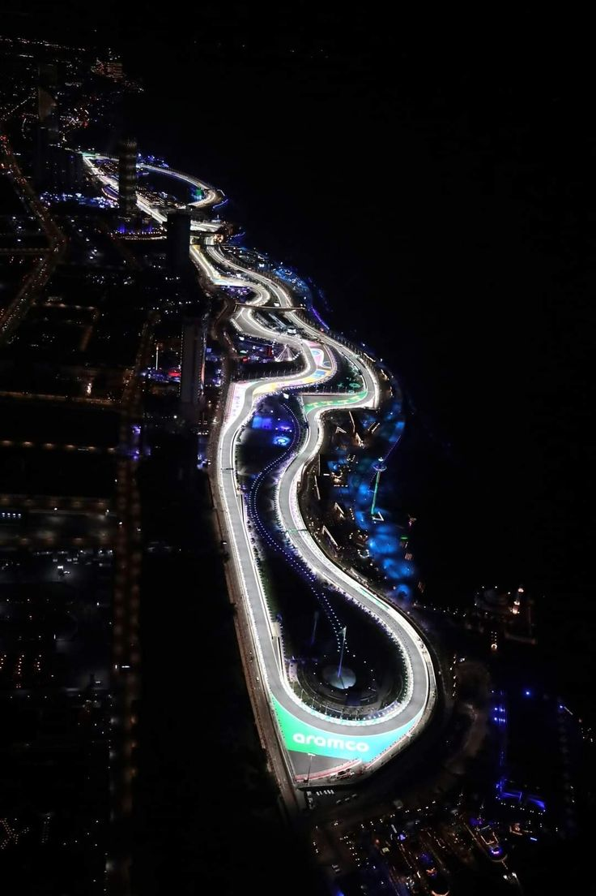

Jeddah Circuit

Technical Details
Location: Jeddah, Saudi Arabia
Lenght: 6.174 km
Laps: 50
First GP: 2021
Curiosities
The Jeddah Circuit is one of the fastest street circuits in Formula 1, located along the Red Sea coastline. It debuted in 2021 as part of Saudi Arabia’s push into global motorsport. The track is known for its high-speed blind corners and narrow walls, making it extremely demanding and unforgiving. It has quickly gained a reputation for dramatic races and safety car interventions.